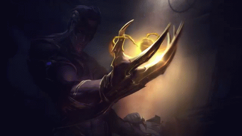
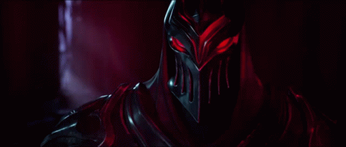

Bem vindo a ordem das sombras
O mestre das sombras está te convocando invocador! Descubra a história de Zed, da proibida manipulação das sombras e como a traição de sua propria família o tornou um poderoso usuário das sombras!
Veja mais

O mestre das sombras está te convocando invocador! Descubra a história de Zed, da proibida manipulação das sombras e como a traição de sua propria família o tornou um poderoso usuário das sombras!
Veja maisO grande amor de Zed é Syndra! Como duas figuras sombrias que se completam!
Zed matou seu mestre que também era pai de Shen, tornando-se assim rivais para sempre!
Kayn é um dos discípulos da ordem das Sombras de Zed! Ele tem uma luta interna onde precisa escolher entre Ordem das Sombras ou Darkin!
Zed fazia parte da Ordem dos Kinkou, um antigo clã onde o equilíbrio prevalece. Zed traiu esse clã se aprofundando nas sombras.
"As sombras me iluminaram."- Zed
Acesse meu github no botão ao lado.